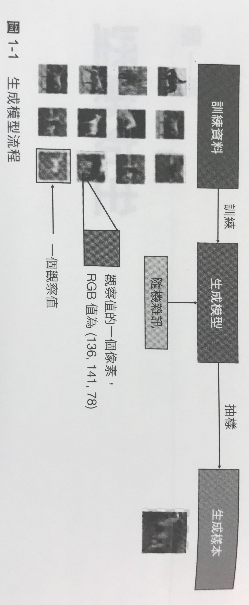

生成對抗網路
Table of Contents

1. GAN
生成對抗網路是由蒙特婁大學的研究生伊思・古德費洛(Ian Goodfellow)所發明。2014年的一個晚上，Goodfellow和他的幾個朋友去了當地的一家酒館，他們討論到打造可以生成高畫質圖像的深度學習系統會碰到到的問題。在喝了不知道多少啤酒後，Goodfellow提出了生成對抗網路背後的基本概念，但受到了其他人很大的質疑。之後，Goodfellow一回到家立即開始寫程式。幾個小時內，他就有了第一個功能強大的生成對抗網路。這個成就使Goodfellow成為深度學習社群的傳奇人物。Meta首席AI科學家楊立昆表示，生成對抗網路是「深度學習領域過去二十年來最酷的概念」1。
2. 生成模型
- 生成模型是以 機率模型 的方式來描述資料集的 產生方式 。對這個模型抽樣就可以生成新的資料。
- 例如：建置一個包含了許多馬匹的影像資料庫，我們想建一個能生成 未出現過的、逼真的馬 的模型。
- 首先需要一個有許多馬的資料集，裡面有許多實例(instance)，每個資枓點為一個觀察值(obwervation)
- 每個觀察值都包含了許多特徵（對於圖片來說就是像素值），生成模型的目標就是建置個能生成多組新特徵的模型，讓這個新特徵看起來和原始資料很類似。
- 生成模型必須是機率型(probabilistic)而非決定型(deterministic)，如果模型是將所有圖片的像素值取平均，則每次產生的結果就都會想同，這就不是生成，模型要包含一個隨機元素來影響其所生成的個別樣本。
- 可以想像有一個未知的機率分配來決定為什麼有些影像比較容易在訓練集資料中找到，有些則否。我們的目標是建置一個模型去盡可能模仿這樣的機率分配，並從中抽樣來生成全新且具鑑別度的觀察值。
- 很難當比賽題目，因為做出來的都是假的，不易評分
2.1. 生成模型與鑑別模型
生成模型的訓練資料中有許多馬的照片，透過觀察所有照片的特徵值（像素），我們生成一個能描述這些特徵值的機率分配，並用這個機率分配來生成一張全新的圖片。生成模型通常是搭配無標籤資料集學會一個 可將輸入映射到特定輸出的映射函數 。

對鑑別模型來說，訓練資料中的每個觀察值（instance）都有對應的label（如，這張是否為梵谷的畫），如此這個模型就能學習如何鑑別這兩個群組，因此，我們可以將之視為監督式學習。
Figure 1: 鑑別模型處理流程
鑑別模型的估計值為 \(p(y|x)\)，即，觀察到 \(x\) 時其標籤為 \(y\) 的機率，鑑別模型會試著去估計出某個觀測值 \(x\) 屬於類別 \(y\) 的機率。
2.2. 生成模型的框架: 兩維度的生成模型遊戲
3. Keras GAN
4. 應用領域
- PairedCycleGAN
- TwinGAN
- Paired
- GigGANs
- Image-to-Text
- Text-to-Image
- 繪圖
- 書寫
- 作曲
- 遊戲
5. DCGANs
- 使用 strided convolutions 取代 pooling layers
- 移除全連接層 fully
6. DeepLearning 的 convolution 動畫
7. 比賽只有 CNN v.s. RNN
8. ideas
- 文字 -> POP
- 有一種應用是將照片中的衣服移除，那，如何判別是真的沒穿衣服還是被 GAN 產生的
- ZARA：把衣服套在人身上
- 如何 judge 一張圖是生成的還是真實的
- Pix2pix: 黑白照片轉彩色、畫輸廓轉照片(圖片)(Paired)、給照片轉 3D
- 把同一張照片轉成各種畫家的畫風
- Explaining and Harnessing Adverssaral Examples: Goodfellow
把一張圖片特意加上噪點，結果使的 AI 的判斷確認為其他圖
後果：可能影響自駕車的安全…..